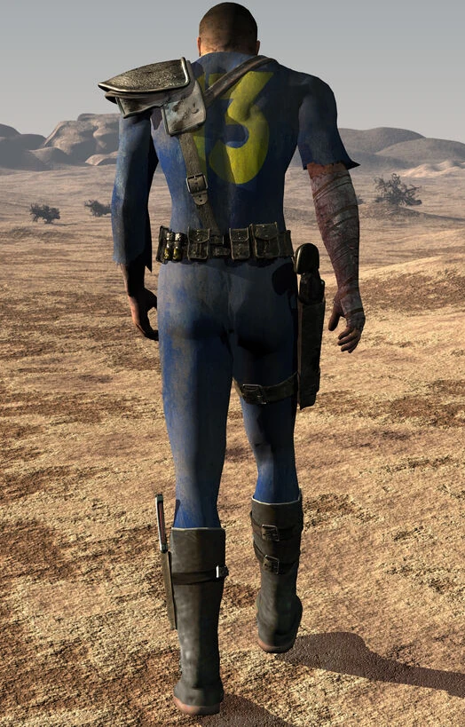

I need someone who will create PBR model of Vault Dweller for Blender. I will try to animate him (motion camera capture) to create awesome and unforgettable movie cutscenes for modification. Massive kabooms too!
I need also someone to create new maps for the modification. No spoilers!
Is anyone common with AI voice generation? Any chance to bring back voices from Fallout 1 talking heads?
If you have such skills and you want be part of project fell free to join! Check contact button up there!